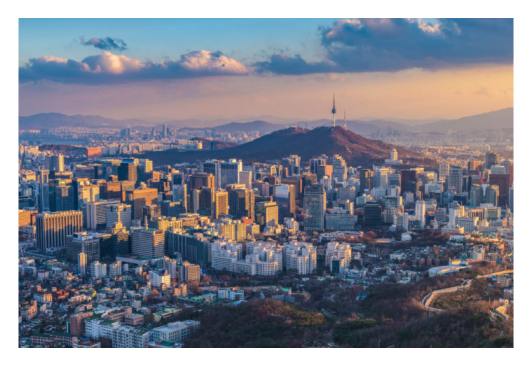
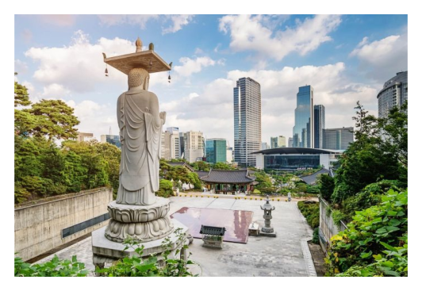
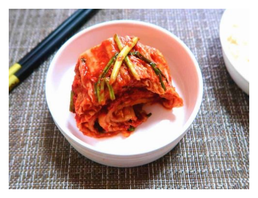
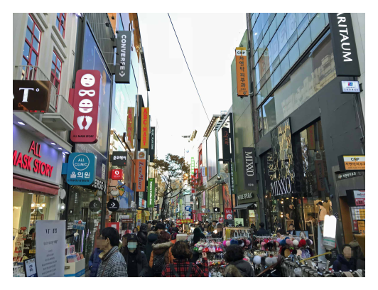

leben in südkorea

die hauptstadt ist seoul, die 2. größte metropolregion der welt [23 mio. menschen].
positive eigenschaften in südkorea das land ist technisch revolutionär und alles ist extremst schnell und hektisch. die kultur südkoreas ist eine mischung zwischen tradition und morderne. 
das lieblings essen ist kimchi, ein scharf eingelegter kohl.
die kultur beschäftigt sich gerne mit korean pop musik, k-drama filmen und ein beliebter zeitvertreib ist karaoke oder in spielehallen gehen. die menschen sind aufgeschlossen und kontaktfreudig.
negative eigenschaften in südkorea die gesellschaft richtet sich nach dem altersunterschied und ist sehr hierarchisch. extrem hoher alkoholkonsum ist in der gesellschaft anerkannt. »han« — nationaltrauer traurige grundstimmung, die nur ein koreaner fühlt aufgrund der geschichtlichen ereignissen. die firma wo man arbeitet muss alle entscheidungen absegnen, welche man im leben treffen möchte. zwischenmenschliche interaktionen sind mit extremen drama geschmückt wie in einer drama soap aus dem tv. die selbstmordrate ist höher als in japan [höchste weltweit]. +10 stunden pro tag arbeiten ist normal.